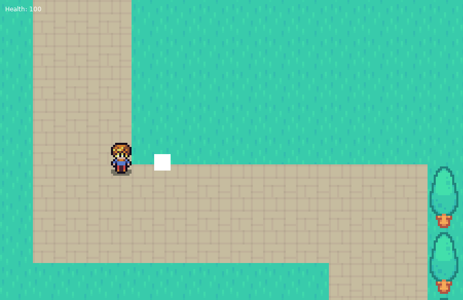
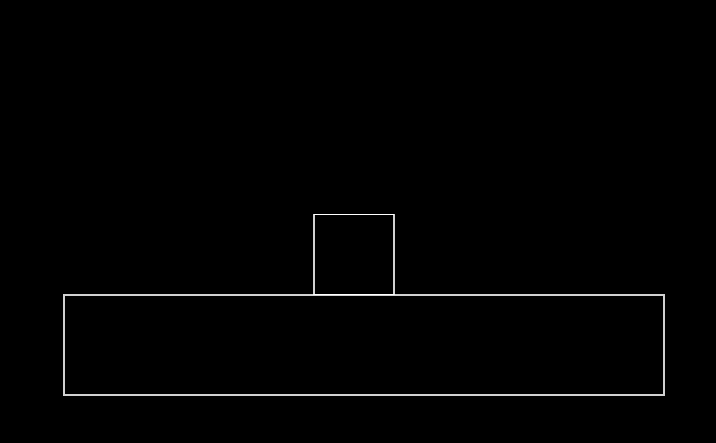
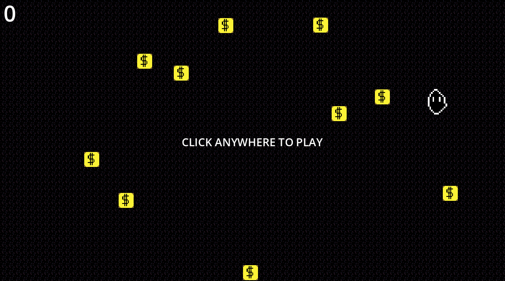
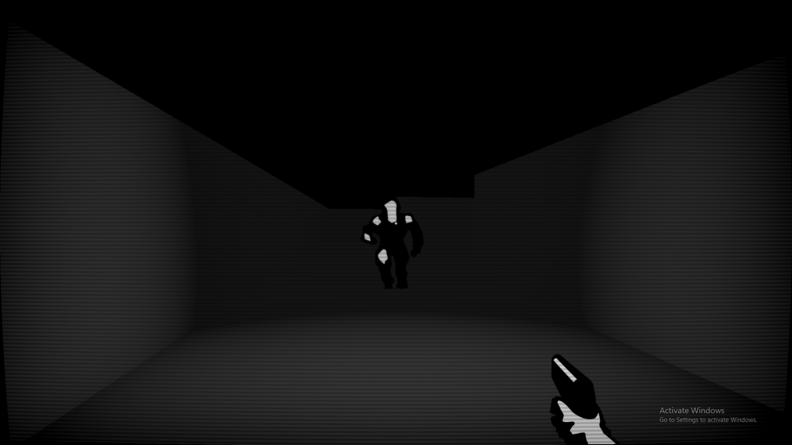
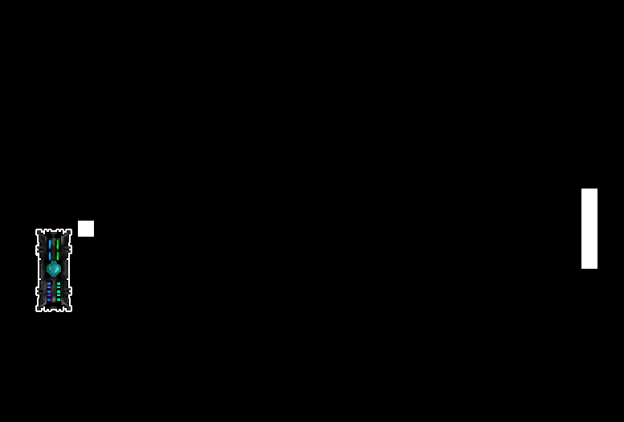

Personal Portfolio
I build worlds, systems, and experiences from scratch — in Godot, Love2D, and Raylib. Passionate about the intersection of code, art, and interactive storytelling.
// 01 — About Me
I'm a self-taught game developer who started making games out of pure curiosity — and never stopped. I've spent my time exploring different engines and paradigms: the elegance of Love2D's simplicity, the power of raw Raylib in C++, and the flexibility of Godot's node system.
For me, game development isn't just about programming — it's about systems thinking, creating feedback loops that feel satisfying, and building worlds that players want to inhabit. Every prototype I make teaches me something new about how people interact with interactive systems.
// Tools & Skills
// 02 — Projects

My first project in game development. After discovering a Lua-based library, I built this as an experiment to understand core gameplay systems, logic, and how interactive experiences are created from scratch.


A fast-paced coin collection game — grab every coin as quickly as you can.

My first dive into 3D — a doom-inspired horror shooter where dark corridors and lurking threats made sure I never got too comfortable with the engine.

// 03 — How I Work
I start with a core mechanic or emotion I want to create. What should the player feel? What's the one thing that makes this fun?
Build the ugliest playable thing as fast as possible. No art, just boxes and logic — does the core loop feel good?
Layer in juice: sound, particles, screenshake, visual feedback. Game-feel is the invisible ingredient players always notice.
Put it in front of someone. Watch them play without saying a word. Their confusion is the most honest feedback you'll get.
// Godot HTML5 export · Use arrow keys / WASD · Press F to fullscreen